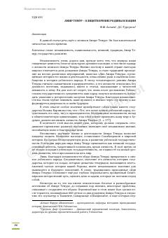

ATAmir Temurning tarixiy shaxsiyati va uning davlatchilik rivojidagi o'rni haqidagi ilmiy maqola.
Ushbu maqola Amir Temurning tarixiy shaxsiyati, uning davlatchilik rivojidagi o'rni va mustaqillik yillarida unga bo'lgan munosabatning qayta tiklanishini tahlil qiladi. Mualliflar tarixiy manbalar va zamonaviy qarashlar asosida Sohibqironning siyosiy va ma'naviy merosini yoritib berishadi.